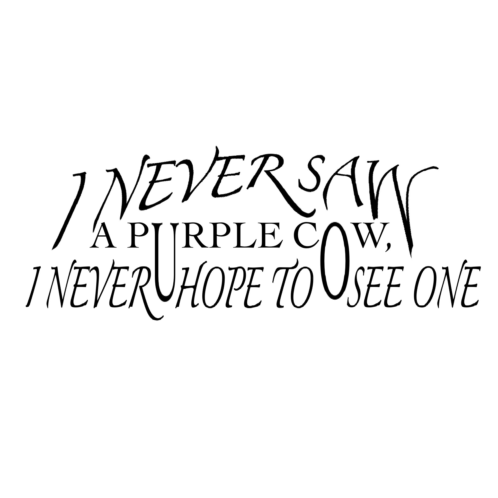

back to main page
year 1 projects
TYPOGRAPHY POSTERS

.png)
MAKING A TYPOGRAPHY POSTER.
Utilising a simplistic design allows the image to be legible from a distance. When the image is shrunk it follows the trend of ultra simplistic clean monochrome images and branding most major companies have been adopting recently. Using the image of human evolution and the repetitive phrase “nothing changes if nothing changes” is a message to the viewer that humans need to grow and change and if they want to change something in their life they need to do something different then what they was doing before.
Utilising a simplistic design allows the image to be legible from a distance. When the image is shrunk it follows the trend of ultra simplistic clean monochrome images and branding most major companies have been adopting recently. Using the image of human evolution and the repetitive phrase “nothing changes if nothing changes” is a message to the viewer that humans need to grow and change and if
TYPOGRAPHY POSTER 2

I think this font really works for the poem because it adds a sense of playfulness that matches the weird, fun idea of a purple cow. The stretched letters and unusual spacing make it feel a little silly—in a good way. It doesn’t follow any strict rules, which makes the poem feel more alive and spontaneous. The way the words are arranged pulls your attention and makes the poem stick in your head more. It’s not just about the meaning—it becomes something you can see and feel. That really helps bring out the poem’s quirky charm.